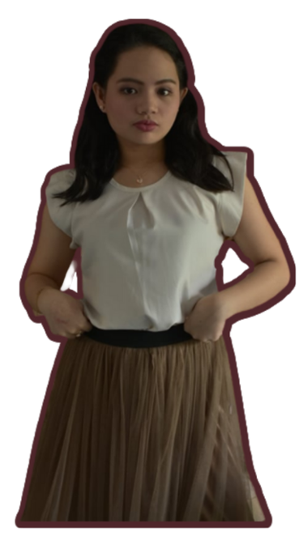

My name is Mary Franchezca Supan Ellar.
I was born on December 21, 2003 in Dasmariñas City, Cavite.
I have been a consistent honor student since elementary school
and continue to be so, now that I am in senior high school.
My strengths are that I am good at dancing, I really love to socialize with many people, and I am good at editing pictures and videos.
While I consider my weaknesses are writing essays, solving math equations, and speaking English fluently.
My dream was to become a multimedia developer. I like to pursue this job because they design software
and create multimedia applications by creating animations, graphic images, and so on.